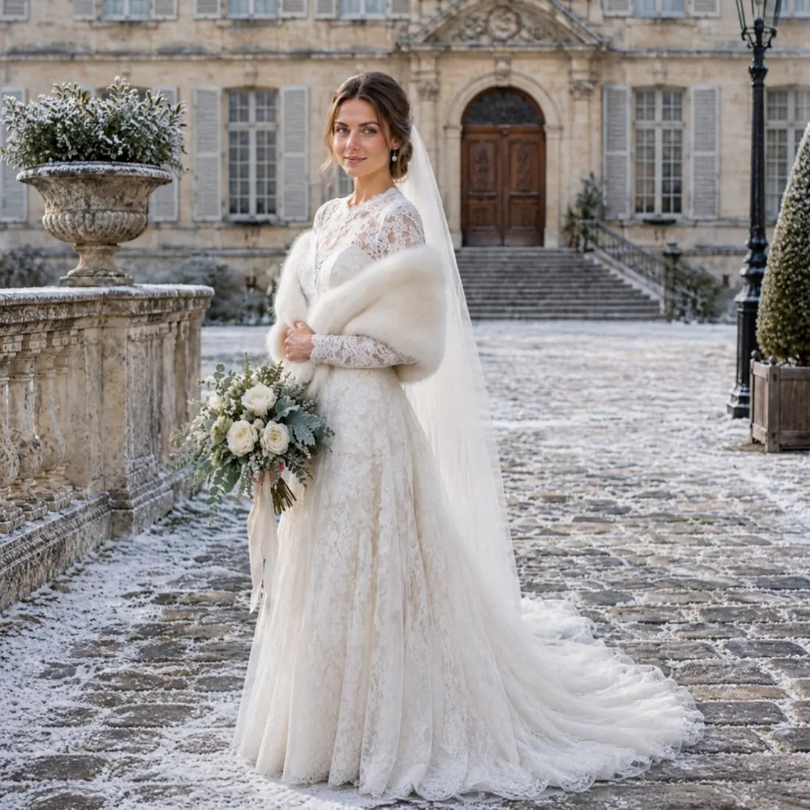
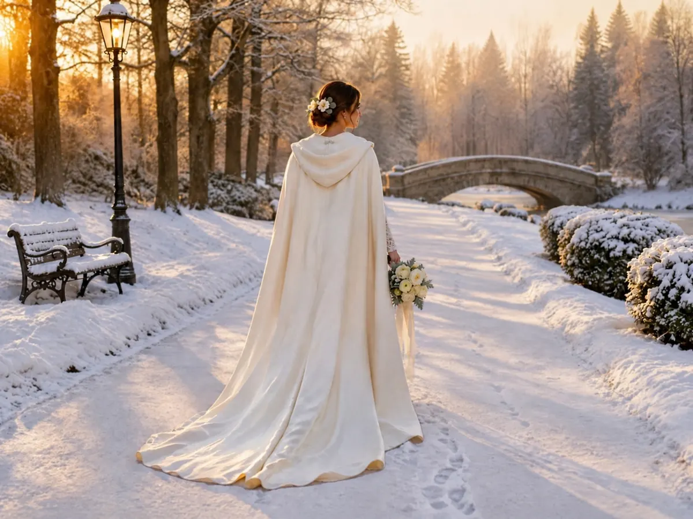

Accueil › Conseils › Robe de mariée d'hiver
Conseils
Robe de mariée d'hiver : comment bien la choisir
Se marier en hiver, c'est la promesse d'une lumière douce, d'une décoration chaleureuse et souvent d'un lieu plus facile à réserver. Mais c'est aussi une robe à choisir autrement : il faut qu'elle soit belle en photo, et que vous n'ayez pas froid de la cérémonie au dîner. Voici nos conseils pour trouver la bonne.
L'essentiel en 30 secondes
- Matières : mikado, satin ou crêpe, qui ont de la tenue et protègent du froid.
- Manches longues en dentelle : élégantes et légères, c'est le choix le plus naturel en hiver.
- Robe bustier ? Oui, avec une étole, un boléro, une cape ou de la fausse fourrure pour l'extérieur.
- Calendrier : commencez les essayages 8 à 12 mois avant le mariage.

Quelle matière pour une robe de mariée d'hiver ?
En hiver, on privilégie les tissus qui ont de la tenue et un peu d'épaisseur. Voici comment les comparer :
| Matière | Aspect | Chaleur | Idéale pour |
|---|---|---|---|
| Mikado | Épais, légèrement brillant, tient sa forme | ★★★ | Robe princesse ou sirène très structurée |
| Satin | Lisse et lumineux | ★★☆ | Cérémonie habillée, en soirée |
| Crêpe | Souple et mat | ★★☆ | Robe près du corps, confortable toute la journée |
| Dentelle (sur robe doublée) | Fine, en relief | ★★☆ | Manches longues, dos habillé |
| Mousseline, tulle seul | Léger et vaporeux | ★☆☆ | Possible, avec une pièce pour se couvrir |
Pour voir toutes nos robes à dentelle, rendez-vous sur notre page robes de mariée en dentelle.
Manches longues ou robe bustier ?
Les manches longues sont le choix le plus évident en hiver. En dentelle transparente, elles restent légères et très élégantes. Voici quatre robes à manches longues à essayer à la boutique :


Lissette est entièrement en dentelle de Calais, avec un col montant. Fiona et Florence ont des manches en dentelle transparente, et Trisha, en crêpe, de longues manches en dentelle.
Vous avez eu un coup de cœur pour une robe bustier ? Pas besoin d'y renoncer : il suffit de prévoir une pièce pour couvrir les épaules pendant les moments en extérieur.
Le conseil de la boutique
À l'essayage, apportez l'étole ou la veste que vous envisagez, ou au moins une photo. Vous verrez tout de suite si elle va avec la robe, et votre conseillère pourra vous orienter vers les modèles qui s'accordent le mieux.
Étole, boléro, cape ou fausse fourrure : comment se couvrir ?
- L'étole se pose et s'enlève en un instant : pratique pour passer de l'église au vin d'honneur.
- Le boléro couvre les épaules et les bras tout en laissant voir le corsage.
- La cape, longue ou courte, fait beaucoup d'effet en photo, surtout avec une capuche bordée.
- La fausse fourrure réchauffe le plus. Choisissez-la dans le même blanc que votre robe (blanc pur, ivoire ou champagne) pour que l'ensemble reste harmonieux.

Quelle silhouette pour un mariage d'hiver ?
Toutes les coupes fonctionnent en hiver ; c'est surtout la matière qui change.
- Une robe princesse en mikado ou en satin, avec sa grande jupe, a une allure de bal d'hiver.
- Une robe sirène en crêpe ou en mikado est très chic pour une cérémonie en soirée.
- Une robe bohème se porte aussi en hiver, de préférence avec des manches longues en dentelle.
Nos conseils pratiques pour le jour J
Check-list du mariage d'hiver
- Photos de couple en début d'après-midi : les jours sont courts, la lumière y est la plus belle.
- Chaussures fermées, et une paire de rechange si vous devez marcher dehors.
- Une traîne qui se relève, plus facile à gérer sur un sol mouillé.
- Un collant fin couleur chair ou un jupon de plus sous une jupe ample : invisibles, et ça change tout.
- Une pièce pour se couvrir (étole, boléro, cape) pour le vin d'honneur et les photos.
Quand acheter sa robe pour un mariage d'hiver ?
Comme pour toute robe de créateur, comptez 8 à 12 mois avant le mariage : la robe se commande, puis il faut parfois prévoir des retouches. Pour un mariage l'hiver prochain, c'est donc le bon moment pour commencer vos essayages. Tous nos conseils sont dans notre guide : comment choisir sa robe de mariée.
Vos questions sur la robe de mariée d'hiver
Quelle robe de mariée porter en hiver ?
Une robe dans une matière qui a de la tenue, comme le mikado, le satin ou le crêpe, idéalement avec des manches longues en dentelle. Si vous préférez une robe bustier, prévoyez une étole, un boléro ou une cape pour l'extérieur.
Peut-on porter une robe bustier pour un mariage d'hiver ?
Oui. La cérémonie et la soirée se passent en intérieur : il suffit d'ajouter une pièce pour couvrir les épaules pendant les photos et les déplacements, comme une étole ou une cape.
Quand acheter sa robe de mariée pour un mariage en hiver ?
Comptez 8 à 12 mois avant la date, car une robe de créateur se commande puis se retouche. Pour un mariage l'hiver prochain, c'est donc le bon moment pour commencer les essayages.
Essayer une robe de mariée d'hiver à Lyon
La boutique Pronuptia Lyon, 9 rue des Remparts d'Ainay dans le 2e arrondissement, propose plus de 70 robes de créateurs à essayer sur rendez-vous. Dites-nous que vous vous mariez en hiver : nous vous préparerons une sélection de robes à manches longues et en matières d'hiver.
Prête à trouver votre robe d'hiver ?
Réservez votre essayage à la boutique Pronuptia Lyon.
Prendre rendez-vous